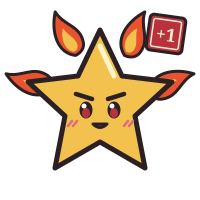
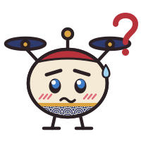

讓無人機
聽得懂、學得會



問今天要回答三個問題
RL 和 LLM 是什麼？
一個靠試誤學動作，一個靠讀大量文字學推理
為什麼要把它們合在一起？
兩者的弱點剛好互補
怎麼合？做到哪了？
四種結合法、真實論文的例子、還沒解決的問題

任先看場景：無人機群要做什麼？
⚔️ 對抗與追逃
兩隊無人機互相追擊、躲避。例：5 對 5 的對抗遊戲
🗺️ 路徑巡訪
決定每台去哪些點、照什麼順序飛。例：10 台巡完 500～2000 個點
🧭 協同導航
一起抵達或覆蓋多個目標，同時不能相撞
🆘 搜救
在災區找到受困者，並把資訊傳回地面站
学強化學習（RL）：靠試誤學會做事
Agent（無人機）就像訓練小狗：做對了給零食，做錯了沒有。
- reward（獎勵）：定義什麼是好行為，例如「抓到目標 +10」
- 策略（policy）：看到什麼狀態就做什麼動作，這是 RL 要學的東西
- 不需要標準答案，但要試很多次，所以通常在模擬器裡訓練
群很多台一起學：MARL 與 CTDE
多台無人機同時學習、互相影響，叫做多智能體強化學習（MARL）。最常見的訓練方式是 CTDE：
🏫 訓練時：集中
「教練」看得到所有無人機的位置和動作，幫每一台打分數
🚁 執行時：分散
每台只看自己感測到的東西，自己做決定，不需要中央電腦
語大型語言模型（LLM）：讀過大量文字的推理者
用大量文字訓練的模型，能讀懂、寫出自然語言。ChatGPT 背後就是這類模型。
- 會推理、規劃、寫程式，有大量常識
- 論文裡用到的：GPT-4o、Qwen2.5、DeepSeek-R1
- 能看圖的版本叫 VLM（視覺語言模型）
在無人機上，它能做的事例如：「看完整個戰場，決定誰去追、誰去守」
補為什麼要合在一起？弱點互補
| 🤖 LLM | ⭐ RL | |
|---|---|---|
| 擅長 | 看全局、懂語言、會分工 | 即時反應、從經驗中變強 |
| 弱點 1 | 慢：呼叫一次要等，網路還可能不穩 | 視野小：只看自己周圍 |
| 弱點 2 | 會亂講（幻覺）：輸出違反電量限制的路線、"go to target point #8, #8" 這種非法指令 | 換情境就不行：隊伍變大時表現退化 |
| 弱點 3 | 不會從互動中學習 | 沒有專家知識，學得慢 |

①軍師＋飛行員：LLM 下指令，RL 執行
每 300 步看一次全局→「你追擊、你防守、你支援」→⭐ RL 飛行員
照任務即時飛
- 任務指令變成 RL 的額外輸入，每種任務各有自己的 reward
- LLM 不必每一步都回答，所以慢一點也沒關係
5 對 5 對抗的勝率
MATD3、MADDPG、MAPPO 都是常見的多機 RL 演算法。對手是寫死規則的電腦
②規劃者＋檢查員：RL 幫 LLM 把關
排出飛行路線→⭐ RL 檢查員
電量夠？通訊連得上？→✅ 接受
↩️ 退回重排
- 10 台無人機要巡完 500～2000 個點
- GPT-4o 先分區，每台機上的 GPT-4o-mini 排順序
- RL 學會判斷「這條路線會不會出事」，最佳設定下違規率只有 0.3%
2000 個點的總耗能（×10⁷ kJ）
越短越好。只用 LLM、沒有檢查員時，耗能多了 58%
③會開會的小隊：用語言溝通，RL 決定角色
- 每台無人機都有一個小 LLM，用自然語言跟隊友討論「我們去哪個目標」
- RL 負責決定每台這一刻當什麼角色：
Commander 指揮Coordinator 協調Executor 執行 - LLM 給「常識上的建議」，RL 從實際經驗修正
好處：換情境也行
隊伍從 8 台變 11 台，純 RL 的方法退化，這個方法還能維持表現
角色要三種
三角色 > 兩角色 > 沒有角色
論文以圖呈現結果，正文沒有具體百分比（待確認）
④家教：LLM 只在訓練時教，考試時不在
寫出示範策略＋評分規則→⭐ RL 學生
模仿＋自己練習→上場時
只剩學生
- 上場時完全不呼叫 LLM，所以沒有延遲、也不會當場亂講
- 有家教示範，學習效率平均提升 185.9%
⚠️ 注意
目前的兩篇例子是地面機器人（LAMARL）和電力交易（lou 2026），不是無人機。
這也是為什麼它會出現在後面的「還沒解決的問題」。
較四種結合法一覽
| 結合法 | 誰聽誰的 | LLM 什麼時候出場 | 一句話 |
|---|---|---|---|
| ① 軍師＋飛行員 | RL 聽 LLM | 上場時，偶爾 | LLM 分派任務，RL 照任務飛 |
| ② 規劃者＋檢查員 | LLM 要過 RL 這關 | 上場時，每次規劃 | RL 擋下 LLM 的錯誤方案 |
| ③ 會開會的小隊 | 互相 | 上場時，每台都有 | LLM 討論目標，RL 選角色 |
| ④ 家教 | RL 學 LLM | 只在訓練時 | LLM 示範，RL 學會後單飛 |
難讓 LLM 上線的三個難題與解法
🐢 太慢
少問一點：每 300 步才問一次 LLM
dong2026hierarchical
🌀 會亂講
找人檢查：RL 擋下違規路線
ahn2026hallucination
🐘 太大
教出小模型：用 GPT-4o 的回答訓練 Qwen2.5，1.5B 大小在效果和速度間最平衡
wang2025rally

今目前的研究做到哪裡
核心論文很少
13 篇裡，同時有 LLM、RL、無人機的只有 3 篇
真的飛過
3 篇核心論文都只在模擬器裡驗證，最接近的是軟體在環模擬（SITL）
場景簡化
大多設成固定高度、平面移動
另外：3 篇全是多機任務；收錄的論文裡，無人機實機實驗只出現在不用 LLM 和 RL 的古典方法（RACER）。
隙還沒解決的問題
無人機上的「家教」
結合法④ 最適合算力有限的無人機，但還沒有無人機論文用過
用 RL 訓練 LLM 本身
讓 LLM 自己從飛行經驗中變強，收錄的論文裡沒有
什麼時候該問 LLM？
現在都是固定每幾步問一次，能不能讓 RL 學會判斷？
試小測驗（按 → 看答案）
辞名詞小辭典
RL（強化學習）：靠試誤和 reward 學會策略
MARL：多個 agent 一起學的 RL
reward（獎勵）：定義什麼是好行為的分數
CTDE：集中訓練、分散執行
MATD3／MADDPG／MAPPO：常見的多機 RL 演算法
LLM（大型語言模型）：讀寫自然語言、會推理的模型
幻覺：LLM 輸出看似合理、其實錯誤的內容
蒸餾／LoRA：用大模型的回答訓練小模型
SITL（軟體在環模擬）：用真實飛控軟體跑的高擬真模擬，上實機前的最後一步
Safe RL：在遵守限制的前提下學習的 RL
結三句話帶回家

献參考文獻
Core
ahn2026hallucination Hallucination-Aware Hierarchical LLM for Autonomous UAV Mobility Control: A Safe Reinforcement Learning Approach. IEEE Trans. Networking, 2026
dong2026hierarchical Hierarchical decision-making for UAVs' game via LLM enhanced multi-agent reinforcement learning. Aerospace Sci. Technol., 2026
wang2025rally RALLY: Role-Adaptive LLM-Driven Yoked Navigation for Agentic UAV Swarms. IEEE OJVT, 2025
Adjacent（方法借鏡）
zhu2025lamarl LAMARL: LLM-Aided Multi-Agent Reinforcement Learning for Cooperative Policy Generation. IEEE RA-L, 2025
lou2026llm LLM-Enhanced Multi-Agent Reinforcement Learning With Expert Workflow for Real-Time P2P Energy Trading. IEEE Trans. Smart Grid, 2026
cao2025survey Survey on Large Language Model-Enhanced Reinforcement Learning: Concept, Taxonomy, and Methods. IEEE TNNLS, 2025
Adjacent（續）
xiang2025decentralized Decentralized Consensus Inference-based Hierarchical RL for Multi-Constrained UAV Pursuit-Evasion Game. IEEE TNNLS, 2025
yu2025conavgpt Co-NavGPT: Multi-Robot Cooperative Visual Semantic Navigation Using Vision Language Models. arXiv:2310.07937
zhang2026uavgent UAVGENT: A Language-Guided Distributed Control Framework. arXiv:2602.13212
hiep2026dynamic Dynamic Multi-Layer Aerial System for Latent Diffusion-Based Generative AI Inference at the Edge. IEEE Trans. Commun., 2026
song2024local A Local-and-Global Attention RL Algorithm for Multiagent Cooperative Navigation. IEEE TNNLS, 2024
yanmaz2024dynamic Dynamic Multi-UAV Path Planning for Multi-Target Search and Connectivity. IEEE TVT, 2024
zhou2023racer RACER: Rapid Collaborative Exploration With a Decentralized Multi-UAV System. IEEE T-RO, 2023